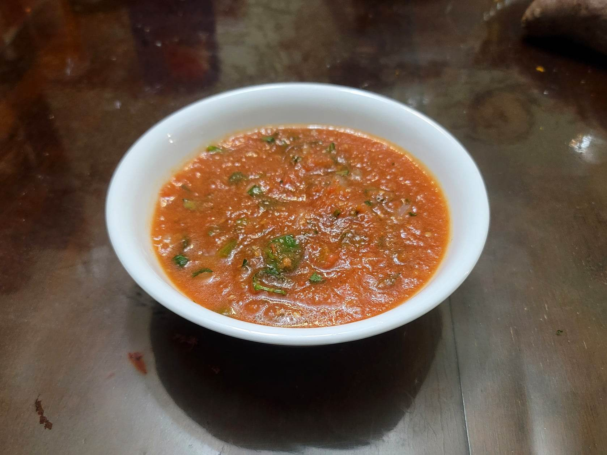

Salsa Roja

Ingredients:
- 3 Roma tomatoes, stem removed
- 2 cloves Garlic
- 1 Jalapeño, stem removed and optionally deseeded
- 1/4 cup White onion, diced
- 1/4 bunch Cilantro, chopped
- 1 tsp Olive oil
- Salt, to taste
Instructions:
- Coarsely blend the tomato, garlic, and jalapeno in a blender or food processor.
- Heat a saucepan with the olive oil over medium high heat. Add the tomato, garlic, jalapeno mixture and let it cook until it reaches a boil.
- Put the salsa in a bowl, add the cilantro and onion, and stir well. Add salt to taste.